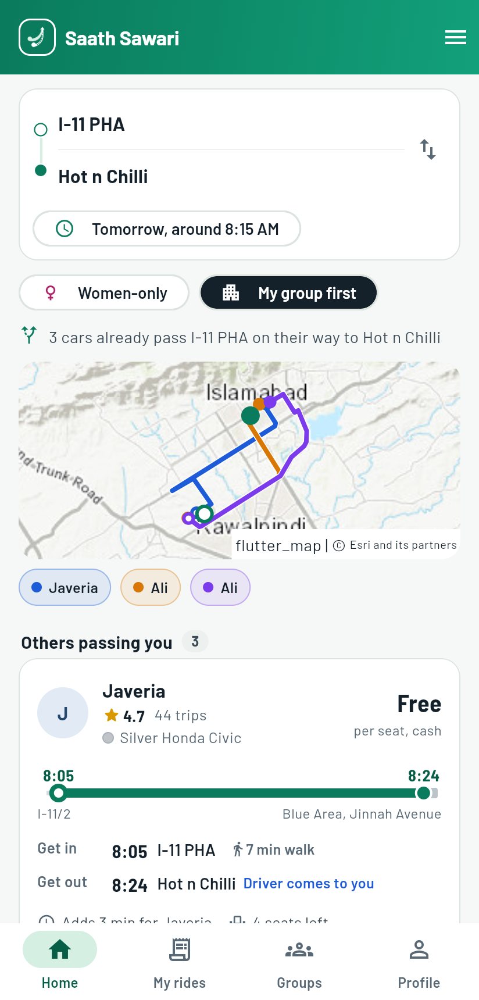
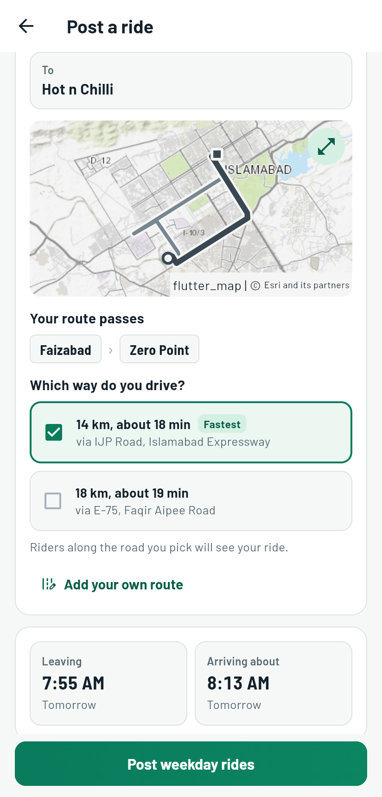

Islamabad & Rawalpindi · Daily commutes
Cars already
going your way.
Share your daily commute across Islamabad and Rawalpindi. Split the fuel in cash. Find a seat on a route that already passes you — without guessing a pickup time.
آپ کے راستے پر پہلے سے چلنے والی گاڑیاں
- Route-first
- Match along the road
- Cash
- Share fuel, never a fare
- Local
- Built for twin-city travel

Made for the twin cities
- Islamabad
- Rawalpindi
- I-10
- Blue Area
- DHA
- Bahria Town
Three steps. One better commute.
Your way to work,
with people going your way.
No fixed pickup slot to guess. Just a route, the days you travel, and the cars already passing through.
-
Pick your route and days
Set where you start, where you are headed, and the weekdays you travel. Your commute can be one-way or both ways.
-
See every car already passing you
Saath Chalo checks the road corridor and direction. Browse the drivers whose routes pass your area, in the order they pass it.
-
Ride together and share the fuel in cash
Agree to ride, see your suggested fair fuel contribution, and pay your share directly in cash. It is cost-sharing, not a fare.
The corridor idea
Not nearby.
On your road.
A driver going from I-11 to Blue Area can pick up riders along the same road — I-10, I-9 Markaz and beyond — in the right direction.
- Direction matters. A car heading toward Blue Area is not matched with someone going the other way.
- Order matters. Stops are shown in the sequence the car reaches them.
- Your days matter. Choose the days you commute and see rides that repeat then.
Trust is built into the ride
A commute should feel
safe from the start.
Clear identity, clear choices, and people you can keep in the loop. Our safety features are part of the service — not a paid upgrade.
-
CNIC verification
Verify identity before joining the community. A safer starting point for every driver and rider.
-
Women-only rides
Women can choose women-only rides. Drivers can set the option when they post a commute.
-
Live trip sharing
Share your live trip with family or a trusted contact while you travel.
-
SOS to your contacts
Send an alert to your chosen emergency contacts with your live location.
-
Names stay private in groups
See a member's commute first. Names are hidden until both people agree to start a conversation.
-
Ratings after a ride
Share feedback after each trip and help the community make better choices over time.

For drivers
Driving anyway?
Post your route once.
Your daily commute already has a route. Let people travelling along it share the fuel — while you stay in control.
- Repeat your weekdays. Set a recurring commute instead of posting every morning.
- Post both ways in one go. Add your return journey and available days.
- Choose who sits where. Set available seats, including the third row in eligible SUVs and vans — up to 7 seats.
- You set the contribution. Saath Chalo suggests a fair fuel share. Agree directly; no fare or commission.
Share the cost. Not another car.
Your commute can
cost less.
When a few people who already travel the same way share one car, everyone can spend less on the journey.
Example commute: I-11 to Blue Area, five days a week. A driver who regularly has a spare seat can receive a fair contribution towards fuel.
Illustrative monthly example
- Route
- I-11 to Blue Area
- Travel days
- 5 / week
- Estimated fuel contribution
- PKR 9,000
Less traffic, too. Fewer separate cars can mean lower commute emissions. Your organisation dashboard can estimate CO₂ avoided from shared trips.
Illustrative example, not a guaranteed saving. Actual contributions depend on route length, fuel economy, seats filled and the amount agreed between commuters.
A better way to get there
Built around real
twin-city routines.
These sample stories show the kind of everyday commute Saath Chalo is designed to support.
I leave I-10 at the same time most weekdays. Finding someone already heading towards Blue Area makes much more sense than arranging a special pickup.
My route is the same every morning. I can post it once, add my return days, and decide how many seats I am comfortable offering.
A verified group for our campus would make it easier to find students travelling along the same corridor, especially for regular classes.
Illustrative launch copy, not verified testimonials. Replace with approved quotes from real pilot users before publishing.
Where we go
Across the routes
that connect the twin cities.
Start with the neighbourhoods, campuses and work hubs you already travel between. Matches are based on the road and direction — not just a radius on a map.
-
Islamabad
I-8, I-9 Markaz, I-10, I-11, G-9, G-10, G-13, H-8, Blue Area, F-6 and surrounding sectors.
-
Rawalpindi
Saddar, Satellite Town, Bahria Town, DHA, PWD and routes connecting into Islamabad.
-
Work and campus hubs
Office and university groups can focus on their own regular travel corridors and verified communities.
Bring Saath Chalo to your office
A better commute
starts with a group.
Tell us where your people travel from. We’ll help you set up a verified group and explore what a commute programme could look like.
- For HR and workplace teamsCompany groups, invite links and commute insights.
- For universitiesVerified campus communities and student ride matching.
Questions, answered
Before you head out.
Is Saath Chalo a taxi or ride-hailing service?
No. Saath Chalo matches people who are already travelling in the same direction. Riders contribute towards shared fuel costs in cash. It is cost-sharing, never a fare or a taxi service.
How is the contribution worked out?
The app suggests a fair share using the route and estimated fuel cost. The amount is discussed and agreed between the people travelling. Payment is made directly in cash, not through the app.
Is it safe for women?
Women can choose women-only rides. Saath Chalo also supports CNIC verification, live trip sharing with family, SOS alerts to emergency contacts, ratings and private names in groups until both people agree to talk.
Which areas are supported?
Saath Chalo is launching in Islamabad and Rawalpindi, including routes through sectors such as I-10, I-11 and G-13, work hubs like Blue Area, and neighbourhoods including DHA and Bahria Town. Availability depends on routes posted by the community.
What does Saath Chalo cost?
The app is free to use. Safety features remain free. Organisations can contact us to discuss a managed company group and commute dashboard.
Can an SUV or van offer more seats?
Yes. Eligible vehicles with a third row can offer up to seven seats. Drivers choose the seats and layout they are comfortable sharing.